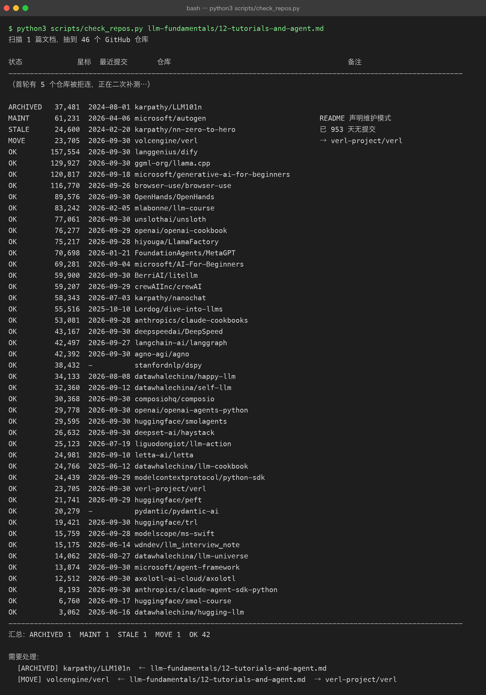

12 · 教程、微调与 Agent 开发：从「看懂」到「做出来」
第 11 章 与本章的分工： 第 11 章推的是「能动手复现的开源项目」——从零实现 Transformer、微调库、推理引擎； 本章推的是「教程与课程」（先把路走对）和「Agent 开发框架」（把模型变成产品）。 两边只在微调部分有少量交接，都有明确指向，不重复正文。
文中的星标数与最近提交日期，全部由
scripts/check_repos.py现场抓取——基础内容于 2026-09-30，12.4.5 增补于 2026-10-01 （见 12.7 的真实运行截图）。 快照会过期，所以更要紧的是 12.7 那套自己复跑的方法。
12.1 三张地图：学、调、造
这一章的内容对应三种截然不同的目标。先认清自己在哪一条线上，再往下看—— 否则你会把「学原理的教程」当成「做产品的框架」用，浪费掉几周。
一句话区分：
| 线 | 你在回答的问题 | 典型产出 | 本仓库对应 |
|---|---|---|---|
| 学 | 「这件事为什么成立」 | 笔记、能跑通的最小实现 | 本目录第 01–10 章 + 第 11 章 |
| 调 | 「怎么让模型听我的」 | 一个 LoRA 权重、一份训练日志 | 第 05 章 · 第 08 章 |
| 造 | 「怎么让别人用上」 | 一个能调用的 API / 一个能演示的应用 | projects/03 · projects/05 |
12.2 教程与课程：先把路走对
12.2.1 中文优先
你在中文语境下学，分词、数据集、对话模板都会更顺，遇到问题也更容易搜到答案。
| 仓库 | 星标 | 最近提交 | 覆盖什么 | 适合谁 |
|---|---|---|---|---|
datawhalechina/happy-llm | 34.1k | 2026-08-08 | NLP 基础 → Transformer → 预训练模型 → 动手搭 LLaMA2 → 训练实践 → RAG / Agent | 中文首选。有 PDF + 在线阅读，第七章正好接本章 12.4 |
datawhalechina/self-llm | 32.4k | 2026-09-12 | 面向国内开源模型（Qwen / GLM / InternLM 等）的部署与微调实操指南 | 手上只有一张消费级显卡、想真调一次时看它 |
liguodongiot/llm-action | 25.1k | 2026-07-19 | 大模型训练 / 推理 / 微调 / 压缩 / 应用的工程实战合集 | 偏工程视角，和你的后端背景最贴 |
datawhalechina/llm-cookbook | 24.8k | 2025-06-12 | 吴恩达系列课程的中文版（Prompt / RAG / Agent 三部分） | 想快速过一遍「LLM 应用能做什么」 |
wdndev/llm_interview_note | 15.2k | 2026-06-14 | 大模型岗位面试题库与知识点整理 | 准备面试时当题纲，配合本目录 第 10 章术语表 |
datawhalechina/llm-universe | 14.1k | 2026-08-27 | 动手学大模型应用开发：RAG、Agent、评估 | 与你 projects/04 的路线高度重合，可作外部对照 |
datawhalechina/hugging-llm | 3.1k | 2026-06-16 | 面向 HuggingFace 生态的入门笔记 | 早期项目，内容较浅，按需查 |
12.2.2 英文经典
| 仓库 | 星标 | 最近提交 | 一句话 |
|---|---|---|---|
microsoft/generative-ai-for-beginners | 120.8k | 2026-09-18 | 微软的 21 课生成式 AI 入门，每课都有可跑代码，是「应用侧」最完整的免费课 |
mlabonne/llm-course | 83.2k | 2026-02-05 | 路线图 + Colab，分「基础 / 科学家 / 工程师」三条线，配图质量高 |
openai/openai-cookbook | 76.3k | 2026-09-29 | 官方示例集。学 API 用法看它就够了，比读任何二手教程都准 |
microsoft/AI-For-Beginners | 69.3k | 2026-09-04 | 更宽的 AI 通识课（含传统 ML / CV / NLP），用来补非 LLM 的背景 |
karpathy/nanochat | 58.3k | 2026-07-03 | 不到 8000 行跑通「分词 → 预训练 → SFT → RL → 评估 → 推理」全流程，一个 --depth 旋钮控制全部超参 |
Lordog/dive-into-llms | 55.5k | 2025-10-10 | 上海交大的动手实践课：微调、推理、智能体、安全（越狱攻击）、RLHF，有 PPT + Notebook |
anthropics/claude-cookbooks | 53.1k | 2026-09-28 | Anthropic 官方示例库，工具调用 / Agent 部分写得非常实操 |
karpathy/nn-zero-to-hero | 24.6k | 2024-02-20 | 从反向传播手搓到 GPT 的视频课配套代码。已不再更新，但内容是完整的——它是「讲得最清楚」的那一类，不是「最新」的那一类 |
huggingface/smol-course | 6.8k | 2026-09-17 | HF 官方小模型课，聚焦「小到能本地跑」的模型与对齐 |
12.2.3 三条不要踩的坑
- 不要全都做。 上面每一条都够你学一个月，全做等于全不做。 中文线挑
happy-llm一个，英文线挑openai-cookbook（学应用）或nanochat（学全流程）一个，就够了。 - 教程的终点是「自己写一遍」。 和
python-practice/00-how-to-practice.md说的一样： 关掉教程重写，才算学过。 - 注意教程和框架的时效差。 教程可以慢两年，框架不行——本章 12.4 里就有活例子。
12.3 微调：把通用模型变成你的模型
第 05 章 讲原理（LoRA 为什么省显存、loss mask 怎么打），第 11 章第 7 节 推了 LLaMA-Factory 与 trl。 这里补的是「你到底该用哪个」，以及第 11 章没覆盖的工程侧选项。
| 仓库 | 星标 | 最近提交 | 定位 | 什么时候用它 |
|---|---|---|---|---|
unslothai/unsloth | 77.1k | 2026-09-30 | 极致省显存的 LoRA / QLoRA 引擎 | 单卡首选。24 GB 显存能跑 7B；官方给免费 Colab，适合你的第一次微调 |
hiyouga/LlamaFactory | 75.2k | 2026-09-28 | 一站式微调平台，100+ 模型、SFT/DPO/PPO/KTO 全支持 | 零代码 WebUI，中文文档完善。想先跑通流程用它 |
deepspeedai/DeepSpeed | 43.2k | 2026-09-30 | 微软的分布式训练框架（ZeRO 系列） | 多卡 / 大模型才需要。单卡跑 LoRA 用不上它 |
volcengine/verl | 23.7k | 2026-09-30 | RL 训练框架，RLHF / GRPO 流水线 | 要做第 08 章那种对齐训练时。注意仓库已迁至 verl-project/verl，见 12.6 |
huggingface/peft | 21.7k | 2026-09-29 | LoRA / QLoRA / DoRA 官方实现 | 想理解 LoRA 而不是只想用：几行代码挂上去，print_trainable_parameters() 亲手验证 0.39% |
huggingface/trl | 19.4k | 2026-09-30 | SFT / DPO / PPO / GRPO 训练库 | 从 DPOTrainer 入手，不需要奖励模型就能跑通 |
modelscope/ms-swift | 15.8k | 2026-09-28 | 魔搭的微调框架，国产模型支持最全 | 你要调 Qwen / GLM / InternLM 系列时，它比 LLaMA-Factory 更贴 |
axolotl-ai-cloud/axolotl | 12.5k | 2026-09-30 | 配置驱动的微调工具，YAML 即实验 | 需要跑大量消融实验、想用配置文件管理版本时 |
一句选型话：单卡先试 unsloth；想不写代码就先 LlamaFactory；只想搞懂原理就 peft。
12.4 Agent 开发：把模型变成产品
这是本章最重要的部分，也是最容易踩坑的部分——因为它的生态正在快速洗牌。
12.4.1 写在最前：2026 年的两次洗牌
| 事件 | 事实 | 对你的影响 |
|---|---|---|
| AutoGen 进入维护模式 | 脚本实测：microsoft/autogen 最近提交 2026-04-06，首页带维护模式徽章；它最近一次提交的标题是 "Update maintenance mode banner in readme"。功能已合并进 microsoft/agent-framework | 新项目不要从 AutoGen 起步。它仍是多智能体领域最经典的教材（读设计思想很有价值），但别把它当生产线 |
| 多个知名仓库换了组织 | geekan/MetaGPT → FoundationAgents/MetaGPT；All-Hands-AI/OpenHands → OpenHands/OpenHands；anthropics/anthropic-cookbook → anthropics/claude-cookbooks | 引用旧地址会 302，但你抄来的示例可能已经落后一个版本。引用前先确认真实地址 |
这两条不是从博客转述的，是
scripts/check_repos.py当场探测的结果 （归档/维护模式/迁移都是脚本直接读仓库首页与 Atom feed 得出的）。网上大量 2026 年的对比文章仍在推荐 AutoGen 做新项目。
12.4.2 代码优先的框架
| 仓库 | 星标 | 最近提交 | 心智模型 | 适合 |
|---|---|---|---|---|
langchain-ai/langgraph | 42.5k | 2026-09-27 | 状态图：节点是步骤，边是条件跳转，检查点保存状态 | 要上生产就选它。人工介入、断点重放、长任务恢复是原生能力 |
crewAIInc/crewAI | 59.2k | 2026-09-29 | 角色分工：agent 有 role / goal / backstory，像带团队 | 最快做出多智能体原型。但它已不依赖 LangChain，网上老教程里的写法可能失效 |
openai/openai-agents-python | 29.8k | 2026-09-30 | 轻量：handoff 交接 + guardrails + 追踪 | 已经在用 OpenAI 生态，想要最少抽象 |
huggingface/smolagents | 29.6k | 2026-09-30 | 极简：核心约一千行，用「写代码」代替「调工具」 | 想先看懂 Agent 到底是怎么转起来的——建议第一个读它 |
deepset-ai/haystack | 26.6k | 2026-09-30 | 管道式，为 RAG 而生 | 你的 projects/04 要上生产时的重型替代 |
letta-ai/letta | 25.0k | 2026-09-10 | 有状态：把长期记忆当一等公民 | 跨会话记忆是核心需求时 |
geekan/MetaGPT | 70.7k | 2026-01-21 | 把「软件公司」建模成多智能体 | 读它的角色编排设计，产出 PRD / 架构 / 代码的教学演示很完整 |
stanfordnlp/dspy | 38.4k | 2026-09-27 | 不写提示词，写程序：把 prompt 当可优化参数 | 你受够了手调 prompt、想用数据自动优化时 |
agno-agi/agno | 42.4k | 2026-09-30 | 轻量多模态 Agent 框架 | 快速起步的另一个选择 |
pydantic/pydantic-ai | 20.3k | 2026-09-30 | 类型安全：产出直接是 Pydantic 模型 | 你在 python-practice/04 用过 pydantic，这条对你迁移成本最低 |
microsoft/agent-framework | 13.9k | 2026-09-30 | AutoGen + Semantic Kernel 的合并继任者 | 团队在 .NET / Azure 栈时 |
run-llama/llama_index | 52.4k | 2026-09-29 | RAG 框架：索引 / 检索 / 查询引擎，与 haystack 并列的另一条主流路线 | 你要做 projects/04 那种 RAG 时，二选一对照学 |
microsoft/semantic-kernel | 28.6k | 2026-09-30 | 轻量多语言 Agent SDK（C# / Python），AutoGen 的兄弟项目 | .NET / Azure 栈，或想看微软系 Agent 设计的另一种写法 |
12.4.3 平台：不写代码也能搭
| 仓库 | 星标 | 最近提交 | 说明 |
|---|---|---|---|
langgenius/dify | 157.6k | 2026-09-30 | 可视化搭 Agent 与 RAG 流水线，星标数是整个 Agent 生态第一。适合快速做 Demo 与内部工具 |
browser-use/browser-use | 116.8k | 2026-09-26 | 让模型操作真实浏览器，专治「没有 API 的网站」。注意每步都是一次模型调用，长任务很贵 |
OpenHands/OpenHands | 89.6k | 2026-09-30 | 自主编程 Agent，在沙箱里写代码、跑测试、迭代 |
12.4.4 能力组件：Agent 的「手脚」
框架负责怎么想，这些负责能干什么：
| 仓库 | 星标 | 最近提交 | 解决什么 |
|---|---|---|---|
modelcontextprotocol/python-sdk | 24.4k | 2026-09-29 | MCP 官方 Python SDK。把「你能调的工具」标准化，本仓库 projects/05 就是这条线 |
BerriAI/litellm | 59.9k | 2026-09-30 | 统一 100+ 模型厂商的调用接口 + 成本统计 + 限流。换模型不改业务代码 |
composiohq/composio | 30.4k | 2026-09-30 | 预置的工具集（GitHub / Slack / Gmail…），省掉手写工具定义 |
anthropics/claude-agent-sdk-python | 8.2k | 2026-09-30 | Claude 官方 Agent SDK，安全敏感场景的第一方选择 |
12.4.5 评估、可观测性与向量库
框架负责「怎么想」，12.4.4 负责「能干什么」，但几乎所有教程都跳过一环：你做完之后怎么知道它好不好。 这一节补三样东西：评估、可观测性、向量库——它们不构成「又一个框架」，而是把 Agent 从 Demo 推向生产的地基。 （本节于 2026-10-01 增补，同样经 scripts/check_repos.py 验证。）
| 仓库 | 星标 | 最近提交 | 解决什么 |
|---|---|---|---|
Comet-ml/opik | 22.3k | 2026-09-30 | LLM 评估与追踪：把每次调用的输入 / 输出 / 轨迹记录下来，做回归对比。比手写 print 强一百倍 |
Arize-ai/phoenix | 11.7k | 2026-10-01 | 可观测性与评测，注意 2026-10 进入维护模式——新项目优先用 opik，它更适合当「活例子」看设计 |
milvus-io/milvus | 46.3k | 2026-09-30 | 向量数据库。你 projects/04 已经在用，这里只确认它仍是头号开源选择 |
qdrant/qdrant | 34.9k | 2026-09-03 | 向量数据库，Rust 内核，单机到分布式都能跑 |
chroma-core/chroma | 29.4k | 2026-09-30 | 轻量嵌入式向量库，原型最快：pip install chromadb 就能用，不用起服务 |
一个 verify 出来的坑：Chroma 的 PyPI 包叫
chromadb，但 GitHub 仓库是chroma-core/chroma——chromadb/chromadb和chroma-core/chromadb都是 404。 这正是 12.6 想提醒你的事：包名 ≠ 仓库地址，引用前先让脚本验一下。
12.4.6 怎么选（我建议的顺序）
别按星标选，按你现在缺什么选：
给你的具体建议：你已经有 projects/05-agent-mcp（MCP 那条线）和 projects/03-ai-application。 下一步最划算的不是再学一个框架，而是：
- 先把
smolagents的源码读一遍——一千行能读完，读完你就知道框架到底替你做了什么； - 然后用
LangGraph把projects/03里那个应用重写一遍，加上检查点与人工确认； - 全程用
litellm做模型层，这样换模型不用改业务代码。
框架会一直换，这三件事（工具调用、状态管理、可观测性）不会换。
12.5 一张总表：从「想做的事」倒推资源
| 我想做的事 | 教程 | 框架 / 工具 | 本仓库对接点 |
|---|---|---|---|
| 搞懂 Transformer 为什么这么设计 | 本章 12.2 + 第 01–03 章 | — | llm-fundamentals/ 全书 |
| 从零复现一个小模型 | nanochat | — | 第 11 章 · projects/06 |
| 让模型学会我的领域知识 | self-llm · happy-llm 第六/七章 | unsloth / LlamaFactory | 第 05 章 · projects/08 |
| 让模型输出「我更想要」的风格 | dive-into-llms 对齐实验 | trl / verl | 第 08 章 |
| 做一个能用的 AI 应用 | generative-ai-for-beginners | LangGraph + litellm | projects/03 |
| 让 Agent 调用我的工具 | claude-cookbooks | modelcontextprotocol/python-sdk | projects/05 |
| 做一个 RAG 问答 | llm-universe · llm-cookbook | haystack / Dify | projects/04 · python-practice/06 |
| 不写代码先出个 Demo | llm-course | Dify | — |
| 知道我的 RAG / Agent 到底准不准 | llm-cookbook 评估章节 | Comet-ml/opik | projects/04 |
12.6 避坑清单（脚本实测，非转述）
| 状态 | 仓库 | 实测结果 | 怎么办 |
|---|---|---|---|
| 已归档 | karpathy/LLM101n | 37.5k 星，2024-08-01 已归档，只读 | 内容有参考价值，但不会有新内容。学全流程改用 nanochat |
| 维护模式 | microsoft/autogen | 61.2k 星，最近提交 2026-04-06，首页带维护模式徽章 | 新项目改用 microsoft/agent-framework |
| 维护模式 | Arize-ai/phoenix | 11.7k 星，最近提交 2026-10-01，首页带维护模式徽章 | 评估 / 可观测性需求改用 Comet-ml/opik |
| 已搬家 | geekan/MetaGPT · All-Hands-AI/OpenHands · anthropics/anthropic-cookbook · volcengine/verl · hiyouga/LLaMA-Factory · microsoft/DeepSpeed | 均 302 到新地址（见下表） | 引用与 clone 都用新地址 |
| 长期未更新 | karpathy/nn-zero-to-hero | 24.6k 星，最近提交 2024-02-20（已 953 天） | 这不一定是缺点：它是「讲清楚」型的完成品，不是「跟着版本走」的工具。按内容判断，别只看日期 |
已搬家的新地址对照：
| 旧地址 | 实际地址 |
|---|---|
geekan/MetaGPT | FoundationAgents/MetaGPT |
All-Hands-AI/OpenHands | OpenHands/OpenHands |
anthropics/anthropic-cookbook | anthropics/claude-cookbooks |
volcengine/verl | verl-project/verl |
hiyouga/LLaMA-Factory | hiyouga/LlamaFactory |
microsoft/DeepSpeed | deepspeedai/DeepSpeed |
ggerganov/llama.cpp | ggml-org/llama.cpp |
最后一条，也是最要紧的一条：星标数不等于可用性。 本章星标最高的是 Dify（157.6k）和 browser-use（116.8k），但它们是平台与特定能力，不是通用编排框架； 而生产环境用得最多的 LangGraph 只有 42.5k 星。按「你缺什么」选，不要按排行榜选。
12.7 这份清单怎么维护
推荐清单是最容易腐烂的东西：库会归档、会搬家、会悄无声息地进维护模式， 而你写下的那行链接永远不会自己变。
本仓库为此加了 scripts/check_repos.py： 它从文档里抽出所有 GitHub 链接，逐个探测「能否访问 / 星标 / 是否归档 / 是否搬家 / 最近提交 / 是否声明维护模式」。 不需要 API token（匿名 GitHub API 每小时只有 60 次，扫不完一个仓库）， 它改抓公开页面与 commits.atom，你可以随时复跑：
python3 scripts/check_repos.py llm-fundamentals/12-tutorials-and-agent.md
python3 scripts/check_repos.py --json repos.json # 导出机器可读结果
python3 scripts/check_repos.py --delay 1.5 # 被限流时放慢（见上图说明）真实运行结果：

上一张截图里
stanfordnlp/dspy与pydantic/pydantic-ai两行曾显示为-：那是抓commits.atom时正好撞上 GitHub 对当前出口 IP 的限流，重试 3 次仍未取到。 脚本不会把这种情况悄悄留空当成功——它会在「备注」列显式写出失败原因（如NET），而不是伪造一个日期。 间隔足够时间、放慢节奏（--delay 1.3）重跑后，这两行已恢复正常（见上方截图：dspy为 2026-09-27、pydantic-ai为 2026-09-30，与 12.4.2 表中一致）。教训：连续扫几十个仓库后，本机访问
github.com会出现整站 502 而api.github.com仍正常——这是限流，不是仓库或脚本坏了。 遇到应放慢（--delay）并稍后再跑，绝不能把那一轮结果当成死链写进文档。
12.8 自查问题
- 「学 / 调 / 造」三条线里，你现在在哪条？你手上的项目属于哪条？
- 为什么本章不建议从 AutoGen 起步做新项目？判据是什么（不要答"网上这么说"）？
- 单卡想微调一个 7B 模型，三个候选（
unsloth/LlamaFactory/DeepSpeed）里先排除哪个，为什么？ smolagents和LangGraph的抽象层次差在哪？什么时候该上重的那个？- 如果你要给别人推荐一个库，你会用什么方法确认它还没死？